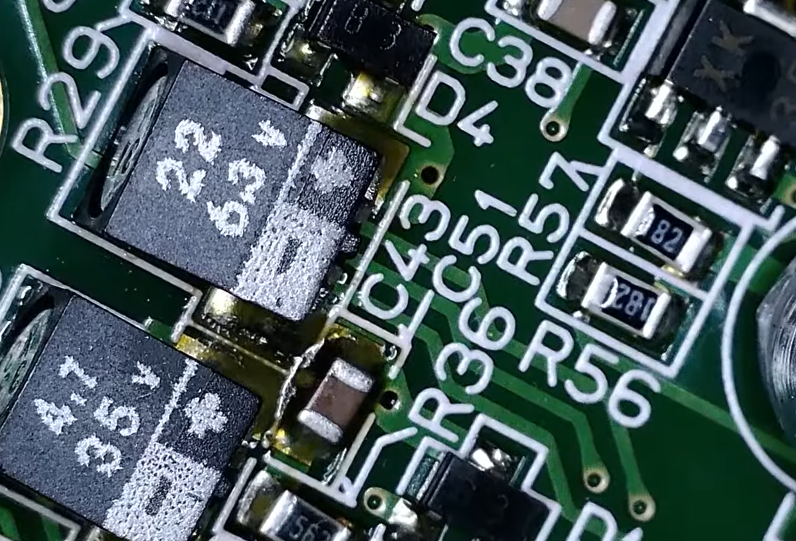
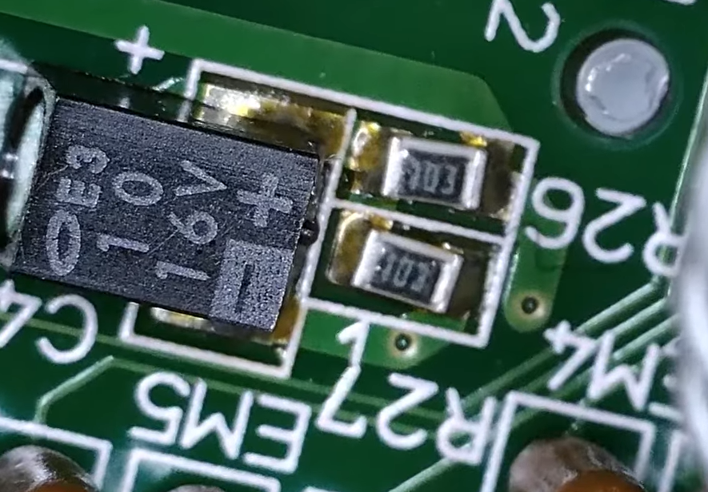

Sega Game Gear Recap: Rädda din konsol från syra-läckage
Har din Game Gear börjat få svag bild, inget ljud eller vägrar den starta?
Nästan alla Game Gear-konsoler lider idag av läckande elektrolytkondensatorer. Syran
från dessa fräter långsamt sönder moderkortet och förstör komponenterna inifrån.
Genom en professionell "recap" byter vi ut samtliga kondensatorer på huvudkortet, ljudkortet och
strömkortet mot moderna komponenter som inte läcker.
Varför är en recap nödvändig?
De kondensatorer Sega använde vid tillverkningen på 90-talet har en begränsad livslängd. Idag har de flesta börjat läcka eller torka ut, vilket leder till att konsolen långsamt dör. En recap är inte bara en lagning, det är en livförsäkring för din konsol.
Symptom på att din Game Gear behöver nya kondensatorer:
- ❌ Bilden syns bara om man vinklar konsolen extremt
- ❌ Ljudet är mycket lågt eller helt borta
- ❌ Skärmen är suddig eller har ränder
- ❌ Konsolen stängs av direkt efter start
- ❌ Dålig kontrast som inte går att justera
Vår arbetsprocess under mikroskop
Vi går noggrant tillväga för att säkerställa att din konsol håller i många år till. Vi använder
mikroskop för att upptäcka även de minsta frätskadorna.
Processen inkluderar: Avlägsning av gamla komponenter, djuprengöring
av kretskortet för att neutralisera syra, samt precisionslödning av nya, högkvalitativa
kondensatorer.
Vad ingår i servicen?
Vi utför en komplett genomgång av maskinen:
- ✅ Byte av samtliga kondensatorer (Main, Sound & Power board)
- ✅ Rengöring av kretskort från läckt elektrolyt
- ✅ Kontroll av banor och lagning vid lättare korrosion
- ✅ Rengöring av knappar och interna kontakter
Original-kondensatorer
Gamla elektrolytkondensatorer som läcker ut frätande vätska. Detta förstör kopparbanorna på moderkortet och ger sämre prestanda.

Original-kondensatorer
Bild på en annan läckt kondensator.
